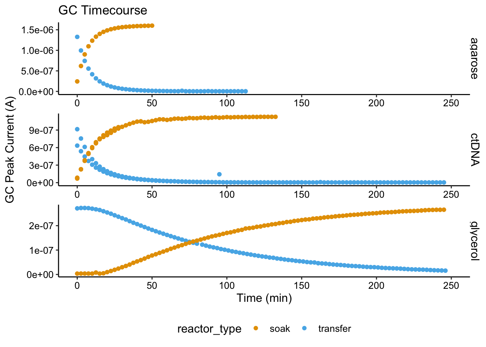
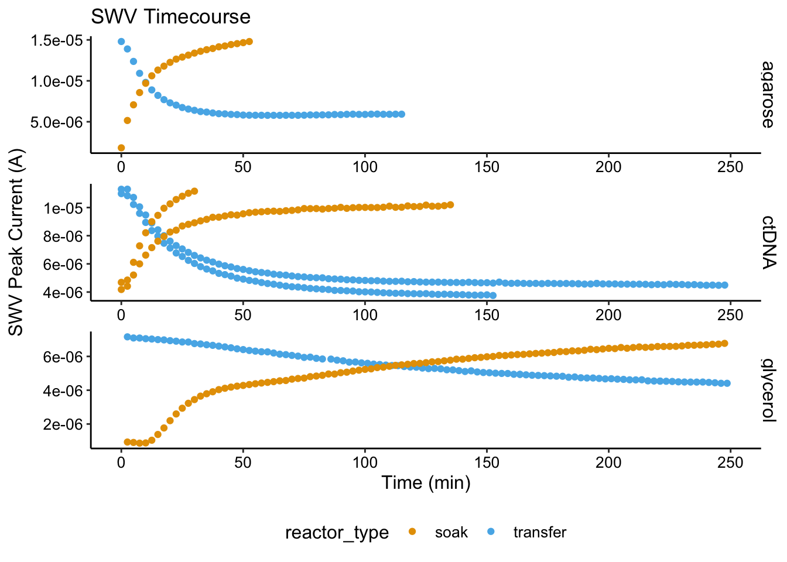
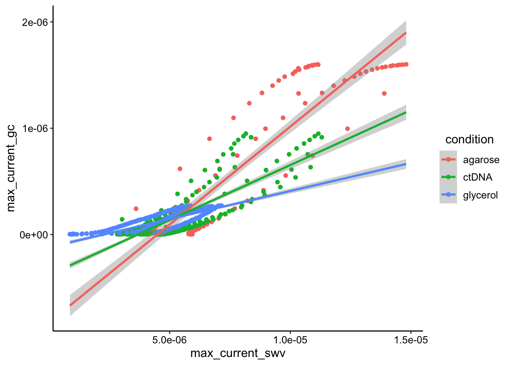

library(tidyverse)
library(cowplot)
library(broom)
library(modelr)
library(viridis)
library(lubridate)
library(hms)
library(knitr)
library(kableExtra)
knitr::opts_chunk$set(tidy.opts=list(width.cutoff=60),tidy=TRUE, echo = TRUE, message=FALSE, warning=FALSE, fig.align="center")
source("../../tools/echem_processing_tools.R")
source("../../tools/plotting_tools.R")
theme_set(theme_1())swvGC_agarose <- read_csv("../../06_06_19_agarose_PYO_2/Processing/06_06_19_processed_swvGC_agarose.csv") %>%
group_by(reactor) %>% mutate(min_time_gc = min(minutes_gc,
na.rm = T), min_time_swv = min(minutes_swv, na.rm = T)) %>%
mutate(norm_time_gc = minutes_gc - min_time_gc, norm_time_swv = minutes_swv -
min_time_swv) %>% mutate(condition = "agarose")
swvGC_ctDNA <- read_csv("../../08_13_19_agarose_ctDNA/processing/08_13_19_processed_swvGC_ctDNA.csv") %>%
mutate(minutes_gc = ifelse(minutes_gc < 1000, minutes_gc +
1440, minutes_gc)) %>% mutate(minutes_swv = ifelse(minutes_swv <
1000, minutes_swv + 1440, minutes_swv)) %>% group_by(reactor) %>%
mutate(min_time_gc = min(minutes_gc, na.rm = T), min_time_swv = min(minutes_swv,
na.rm = T)) %>% mutate(norm_time_gc = minutes_gc - min_time_gc,
norm_time_swv = minutes_swv - min_time_swv) %>% mutate(condition = "ctDNA")
swvGC_glycerol <- read_csv("../processing/08_15_19_processed_swv_gc_max_glycerol.csv") %>%
filter(electrode_gc == "i2") %>% mutate(condition = "glycerol")
swv_gc_df <- bind_rows(swvGC_agarose, swvGC_ctDNA, swvGC_glycerol)ggplot(swv_gc_df, aes(x = norm_time_gc, y = max_current_gc, color = condition)) +
geom_point() + facet_grid(rows = "condition", scale = "free_y") +
xlim(0, 150)
ggplot(swv_gc_df, aes(x = max_current_swv, y = max_current_gc,
color = condition)) + geom_point() + facet_grid(rows = "condition") +
geom_smooth(method = "lm", fullrange = T)
ggplot(swv_gc_df, aes(x = max_current_swv, y = max_current_gc,
color = condition)) + geom_point() + geom_smooth(method = "lm",
fullrange = T)